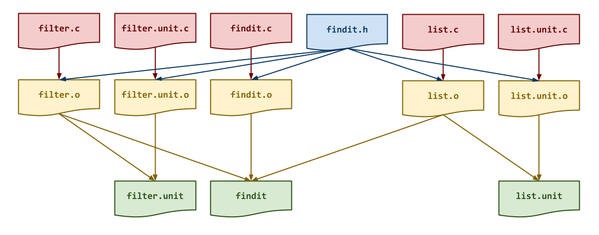
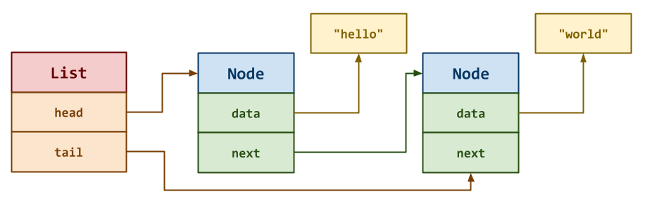

The goal of this homework assignment is to allow you to continue practicing
dynamic memory management in C by building another linked list library
and navigating the file system using low-level functions and system
calls. The first two activities involve implementing a singly linked list
with a tail pointer and then a few filter functions that check
various attributes about files, while the last activity requires you to use
these structures and functions to build a file system search utility similar
to find named findit.
For this assignment, record your source code and any responses to the
following activities in the homework08 folder of your assignments
GitHub repository and push your work by noon Saturday, April 11.
Frequently Asked Questions¶
Activity 0: Preparation¶
Before starting this homework assignment, you should first perform a git
pull to retrieve any changes in your remote GitHub repository:
$ cd path/to/repository # Go to assignments repository
$ git switch master # Make sure we are in master branch
$ git pull --rebase # Get any remote changes not present locally
Next, create a new branch for this assignment:
$ git switch -c homework08 # Create homework08 branch and check it out
Task 1: Skeleton Code¶
To help you get started, the instructor has provided you with the following skeleton code:
# Go to homework08 folder
$ cd homework08
# Download Makefile
$ curl -LO https://pnutz.h4x0r.space/courses/cse.20289.sp26/static/txt/homework08/Makefile
# Download C skeleton code
$ curl -LO https://pnutz.h4x0r.space/courses/cse.20289.sp26/static/txt/homework08/filter.c
$ curl -LO https://pnutz.h4x0r.space/courses/cse.20289.sp26/static/txt/homework08/filter.unit.c
$ curl -LO https://pnutz.h4x0r.space/courses/cse.20289.sp26/static/txt/homework08/findit.c
$ curl -LO https://pnutz.h4x0r.space/courses/cse.20289.sp26/static/txt/homework08/findit.h
$ curl -LO https://pnutz.h4x0r.space/courses/cse.20289.sp26/static/txt/homework08/list.c
$ curl -LO https://pnutz.h4x0r.space/courses/cse.20289.sp26/static/txt/homework08/list.unit.c
Once downloaded, you should see the following files in your homework08 directory:
homework08
\_ Makefile # This is the Makefile for building all the assignment artifacts
\_ filter.c # This is the filter functions C source file
\_ filter.unit.c # This is the filter functions C unit test source file
\_ findit.c # This is the findit utility C source file
\_ findit.h # This is the findit utility C header file
\_ list.c # This is the linked list C source file
\_ list.unit.c # This is the linked list C unit test source file
Task 2: Initial Import¶
Now that the files are downloaded into the homework08 folder, you can
commit them to your git repository:
$ git add Makefile # Mark changes for commit
$ git add *.c *.h
$ git commit -m "Homework 08: Initial Import" # Record changes
Task 3: Unit Tests¶
After downloading these files, you can run make test to run the tests.
# Run all tests (will trigger automatic download)
$ make test
You will notice that the Makefile downloads these additional test data and scripts:
homework08
\_ filter.unit.sh # This is the filter functions unit test shell script
\_ find.test.sh # This is the findit utility test shell script
\_ list.unit.sh # This is the linked list unit test shell script
You will be using these unit tests to verify the correctness and behavior of your code.
Automatic Download¶
The test scripts are automatically downloaded by the Makefile, so any
modifications you do to them will be lost when you run make again. Likewise,
because they are automatically downloaded, you do not need to add or commit
them to your git repository.
Task 4: Makefile¶
The Makefile contains all the rules or recipes for building the
project artifacts (e.g. findit):
CC= gcc
CFLAGS= -Wall -std=gnu99 -g
LD= gcc
LDFLAGS= -L.
TARGETS= findit
all: $(TARGETS)
#-------------------------------------------------------------------------------
# TODO: Add rules for object files
#-------------------------------------------------------------------------------
list.o:
filter.o:
findit.o:
#-------------------------------------------------------------------------------
# TODO: Add rules for executables
#-------------------------------------------------------------------------------
findit:
#-------------------------------------------------------------------------------
# DO NOT MODIFY BELOW
#-------------------------------------------------------------------------------
...
For this task, you will need to add rules for building the intermediate
object files (ie. list.o, filter.o, findit.o) and the findit
executable with the appropriate dependencies as shown the DAG below:

Makefile Variables¶
You must use the CC, CFLAGS, LD, LDFLAGS, AR, and ARFLAGS
variables when appropriate in your rules. You should also consider
using automatic variables such as $@ and $< as well.
Once you have a working Makefile, you should be able to run the following commands:
# Build all TARGETS
$ make
gcc -Wall -std=gnu99 -g -c -o findit.o findit.c
gcc -Wall -std=gnu99 -g -c -o list.o list.c
gcc -Wall -std=gnu99 -g -c -o filter.o filter.c
gcc -L. -o findit findit.o list.o filter.o
# Run all tests
$ make test
Testing list ...
node_create ... Success
node_delete ... Success
list_append ... Success
list_filter ... Success
list_output ... Success
--------------------
Score 5.00 / 5.00
Grade 1.00 / 1.00
Status Success
Testing filter ...
filter_by_type ... Success
filter_by_name ... Success
filter_by_mode ... Success
--------------------
Score 3.00 / 3.00
Grade 1.00 / 1.00
Status Success
Testing findit ...
findit ... Success
findit /etc ... Success
findit /etc -type f ... Success
findit /etc -type d ... Success
findit /etc -name '*.conf' ... Success
findit /etc -readable ... Success
findit /etc -writable ... Success
findit /etc -executable ... Success
findit /etc -type d -name '*.d' ... Success
findit /etc -type d -name '*.d' -executable ... Success
findit . -name '*.c' ... Success
findit . -writable ... Success
findit . -type f -name '*.unit' -executable ... Success
--------------------
Score 13.00 / 13.00
Grade 1.00 / 1.00
Status Success
Checking homework08 quiz ...
Q01 12.00 / 12.00
Q02 2.00 / 2.00
Q03 1.00 / 1.00
Q04 4.00 / 4.00
--------------------
Score 19.00 / 19.00
Grade 1.00 / 1.00
Status Success
Grade Summary ...
List 0.25 / 0.25
Filter 0.15 / 0.15
Findit 0.40 / 0.40
Quiz 0.20 / 0.20
Total 1.00 / 1.00
Status Success
# Remove generated artifacts
$ make clean
Note: The tests will fail if you haven't implemented all the necessary functions appropriately.
Compiler Warnings¶
You must include the -Wall flag in your CFLAGS when you compile. This
also means that your code must compile without any warnings, otherwise
points will be deducted.
Task 5: findit.h¶
The findit.h file is the header file for the findit utility, which
means it contains the type definitions and function prototypes:
/* findit.h: Search for files in a directory hierarchy */
#pragma once
#include <stdbool.h>
#include <stdio.h>
/* Options Structure */
typedef struct {
int type; // File type (-type)
char *name; // File name pattern (-name)
int mode; // Access modes (-executable, -readable, -writable)
} Options;
/* Filter Functions */
typedef bool (*Filter)(const char *path, Options *options);
bool filter_by_type(const char *path, Options *options);
bool filter_by_name(const char *path, Options *options);
bool filter_by_mode(const char *path, Options *options);
/* Data Union */
typedef union {
char * string; // String data
Filter function; // Filter function
} Data;
/* Node Structure */
typedef struct Node Node;
struct Node {
Data data; // Data value
Node *next; // Pointer to next Node
};
Node * node_create(Data data, Node *next);
void node_delete(Node *n, bool release, bool recursive);
/* List Structure */
typedef struct {
Node *head; // Pointer to first Node
Node *tail; // Pointer to last Node
} List;
void list_append(List *l, Data data);
void list_filter(List *l, Filter filter, Options *options, bool release);
void list_output(List *l, FILE *stream);
Other C source files will #include this file in order to use the
functions we will be implementing in this assignment.
Options Structure¶
The Options structure is used by the Filter functions to check the
attribute of various files and directories encountered in the findit
program. It has the following fields:
-
type: This is used to store the file type (ie. S_IFREG, S_IFDIR) to match against. -
name: This is used to store the glob pattern to match against the basename of apathstring. -
mode: This is used to store the access mode to match against.
Data Union¶
The Data union is used by the List structure to store either a string
or a Filter function pointer:
// Declare a Data union with a string
Data dp = (Data)"file path";
// Access string
puts(dp.string)
// Declare a Data union with a Filter function pointer
Data df = (Data)filter_by_type;
// Access Filter function
df.function(path, options);
The details of the Node structure, List structure, and Filter functions
and what you need to implement are provided in the following sections.
Note: For this task, you do not need to modify this file. Instead, you should review it and ensure you understand the provided code.
Activity 1: Linked List (0.25 Points)¶
The findit utility works by first walking a directory recursively and
adding any entries it encounters to a singly linked list of file paths.
For the first activity, you are to implement a singly linked list with both
a head and tail pointer as show below:

The List structure consists of two pointers to Node structures:
head: This points to the firstNodein the singly linked list.tail: This points to the lastNodein the singly linked list.
If the List is empty, then both head and tail should be NULL.
Each Node structure contains a Data union to store either a string or a
Filter function pointer, and a pointer to the next Node in the singly
linked list.
Task 1: list.c¶
The list.c file contains the C implementation for the linked list
structure. For this task, you will need to implement the following
functions:
-
Node * node_create(Data data, Node *next)This function allocates a new
Nodestructure on the heap, initializes itsdataandnextattributes, and returns a pointer to this newNodestructure.void node_delete(Node *n, bool release, bool recursive)This function deallocates the given
Nodestructure. Ifrecursiveistrue, then the function will callnode_deleteon thenextitem in the singly linked list. Likewise, ifreleaseistruethen thedatastring will also be deallocated (before deallocating theNodeitself).Hint: Consider using free.
void list_append(List *l, Data data)This function adds a new
Nodestructure with the givendatato thetailof the givenListstructure.Hint: Consider using
node_createand make sure you update theheadandtailof theListappropriately.void list_filter(List *l, Filter filter, Options *options, bool release)This function filters the given
Listby applying theFilterfunction to eachNode'sDatastring and the givenOptionsstructure. If theFilterfunction returnstrue, then theNodeis kept. Otherwise, it is removed from theList. Ifreleaseistrue, then theDatastring should also be deallocated when removing aNode.Hint: Consider using
node_deletewhen removing aNode. Draw a picture and consider how many pointers you need to effectively traverse theListand to remove aNodein the middle of theList. Moreover, make sure you update theheadandtailof theListappropriately.void list_output(List *l, FILE *stream)This function prints the
Datastring of eachNodein the givenListto the specifiedstream.Hint: Consider using fprintf.
Task 2: Testing¶
As you implement the functions in
list.c, you should use thelist.unitexecutable with thelist.unit.shscript to test each of your functions:# Build test artifacts and run test scripts $ make test-list Testing list ... node_create ... Success node_delete ... Success list_append ... Success list_filter ... Success list_output ... Success -------------------- Score 5.00 / 5.00 Grade 1.00 / 1.00 Status SuccessYou can also run the testing script manually:
# Run Shell unit test script manually $ ./list.unit.sh ...To debug your linked list functions, you can use [gdb] on the
list.unitexecutable:# Start gdb on list.unit $ gdb ./list.unit (gdb) run 0 # Run list.unit with the "0" command line argument (ie. node_create) ...You can also use valgrind to check for memory errors:
# Check for memory errors on list_lower test case $ valgrind --leak-check=full ./list.unit 0Iterative Development¶
You should practice iterative development. That is, rather than writing a bunch of code and then debugging it all at once, you should concentrate on one function at a time and then test that one thing at a time. The provided unit tests allow you to check on the correctness of the individual functions without implementing everything at once. Take advantage of this and build one thing at a time.
Activity 2: Filters (0.15 Points)¶
As with the conventional find command, the
finditutility will allow for filtering the list of file paths by their individual attributes. For instance, to only display the regular files in a directory, you can do the following with find:# Only display regular files in the current directory $ find . -type fInternally,
finditwill support this feature by calling aFilterfunction on each entry in its singly linked list of file paths to check whether or not to keep it. In this specific example,finditwould callfilter_by_typewith anOptionsstructure that has itstypeattribute set to S_IFREG on eachDatastring in itsList.To support filtering the list of file paths in
findit, you are to implement threeFilterfunctions that returntrueif the filepathshould be kept in the list.Task 1:
filter.c¶The
filter.cfile contains the C implementation for theFilterfunctions. For this task, you will need to implement the following functions:-
bool filter_by_type(const char *path, Options *options)This function returns
trueif the file at the specifiedpathhas the corresponding type specified in theOptionsstructure.bool filter_by_name(const char *path, Options *options)This function returns
trueif the basename of the specifiedpathhas matches the glob pattern specified in theOptionsstructure.bool filter_by_mode(const char *path, Options *optionsThis function returns
trueif the file at the specifiedpathhas the access mode specified in theOptionsstructure.Hint: Consider using access.
Task 2: Testing¶
As you implement the functions in
filter.c, you should use thefilter.unitexecutable with thefilter.unit.shscript to test each of your functions:# Build test artifacts and run test scripts $ make test-filter Testing filter ... filter_by_type ... Success filter_by_name ... Success filter_by_mode ... Success -------------------- Score 3.00 / 3.00 Grade 1.00 / 1.00 Status SuccessYou can also run the testing script manually:
# Run Shell unit test script manually $ ./filter.unit.sh ...To debug your
Filterfunctions, you can use [gdb] on thefilter.unitexecutable:# Start gdb on list.unit $ gdb ./filter.unit (gdb) run 0 # Run list.unit with the "0" command line argument (ie. filter_by_type) ...You can also use valgrind to check for memory errors:
# Check for memory errors on list_lower test case $ valgrind --leak-check=full ./filter.unit 0Activity 3: Findit (0.40 Points)¶
Once you have implemented the singly linked list and the
Filterfunctions, you can complete thefinditutility:# Display current directory (no arguments) $ ./findit ./list.c ./list.unit ./Makefile.template ./filter.c.template ... # Display only files $ ./findit . ./list.c ./list.unit ./Makefile.template ./filter.c.template ... # Display only .c files $ ./findit . -name '*.c' ./list.c ./filter.unit.c ./findit.c ./filter.c ./list.unit.c # Display only executable files $ ./findit . -type f -executable ./list.unit ./findit ./list.unit.sh ./findit.test.sh ./filter.unit.sh ./filter.unitAs with the find program,
findittakes thePATHof the directory to recursively search as its first argument and then any options the user wishes to specify to filter the found entries. Forfindit, you only need to support the options shown above, which should correspond to aFilterfunction you implemented in Activity 2.Task 1:
findit.c¶The
findit.cfile contains the C implementation for thefinditprogram. For this task, you will need to implement the following functions:-
void find_files(const char *root, List *files)This function recursively walks the given
rootdirectory and adds any entries it finds to the givenListoffiles.Hint: Consider using opendir, readdir, and closedir as you did for
walkin [Reading 11]. When recursing on a directory, make sure to use the full path.When adding the full path to the
Listoffiles, consider using strdup.Moreover, consider when to add the
rootitself tofiles.void filter_files(List *files, List *filters, Options *options)This function applies each
Filterfunction infilterswith the givenOptionsto theListoffiles.Hint: Consider using
list_filter.int main(int argc, char *argv[])This function parses the command line options, finds the files recursively, applies any filters, and then prints out the found files.
Hint: Consider creating a
Listoffiles, aListoffilters, and anOptionsstructure. As you parse the command line options, set the appropriate attributes in theOptionsstructure and add the correspondingFilterfunction to yourListoffilters.After parsing the command line options, you should then use
find_files,filter_files, and thenlist_output.Be sure to deallocate any resources you allocated on the heap.
Task 2: Testing¶
To test your
finditutility, you can use the providedfindit.test.shscript:# Build test artifacts and run test scripts $ make test-findit Testing findit ... findit ... Success findit /etc ... Success findit /etc -type f ... Success findit /etc -type d ... Success findit /etc -name '*.conf' ... Success findit /etc -readable ... Success findit /etc -writable ... Success findit /etc -executable ... Success findit /etc -type d -name '*.d' ... Success findit /etc -type d -name '*.d' -executable ... Success findit . -name '*.c' ... Success findit . -writable ... Success findit . -type f -name '*.unit' -executable ... Success -------------------- Score 13.00 / 13.00 Grade 1.00 / 1.00 Status Success # Run test script manually $ ./findit.test.shActivity 4: Quiz (0.20 Points)¶
Once you have completed all the activities above, you are to complete the following reflection quiz:
As with Reading 01, you will need to store your answers in a
homework08/answers.jsonfile. You can use the form above to generate the contents of this file, or you can write the JSON by hand.To test your quiz, you can use the
check.pyscript:$ ../.scripts/check.py Checking homework08 quiz ... Q01 12.00 / 12.00 Q02 2.00 / 2.00 Q03 1.00 / 1.00 Q04 4.00 / 4.00 -------------------- Score 19.00 / 19.00 Grade 1.00 / 1.00 Status SuccessSubmission¶
To submit your assignment, please commit your work to the
homework08folder of yourhomework08branch in your assignments GitHub repository. Yourhomework08folder should only contain the following files:Makefileanswers.jsonfilter.cfilter.unit.cfindit.cfindit.hlist.clist.unit.c
Note: You do not need to commit the test scripts because the
Makefileautomatically downloads them.#----------------------------------------------------------------------- # Make sure you have already completed Activity 0: Preparation #----------------------------------------------------------------------- ... $ git add Makefile # Mark changes for commit $ git add list.c # Mark changes for commit $ git commit -m "Homework 08: list.c" # Record changes ... $ git add Makefile # Mark changes for commit $ git add filter.c # Mark changes for commit $ git commit -m "Homework 08: filter.c" # Record changes ... $ git add Makefile # Mark changes for commit $ git add findit.c # Mark changes for commit $ git commit -m "Homework 08: findit.c" # Record changes ... $ git add answers.json # Mark changes for commit $ git commit -m "Homework 08: quiz" # Record changes ... $ git push -u origin homework08 # Push branch to GitHubAcknowledgments¶
If you collaborated with any other students, or received help from TAs or AI tools on this assignment, please record this support in the
README.mdin thehomework08folder and include it with your Pull Request.Graders¶
Once you have committed your work and pushed it to GitHub, remember to create a pull request and assign it to the appropriate teaching assistant from the Reading 08 TA List.
Note: this list changes each week, so be sure to consult the appropriate list for each assignment.